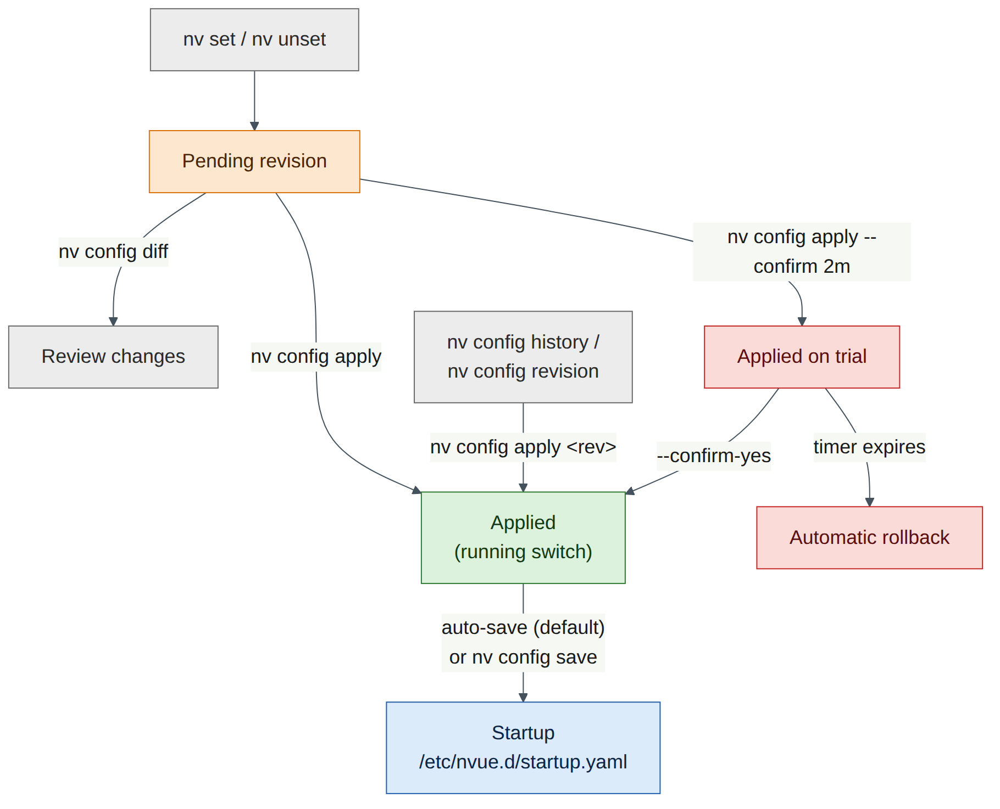
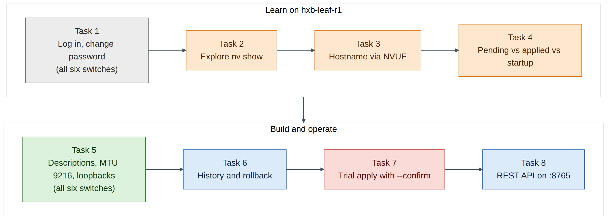
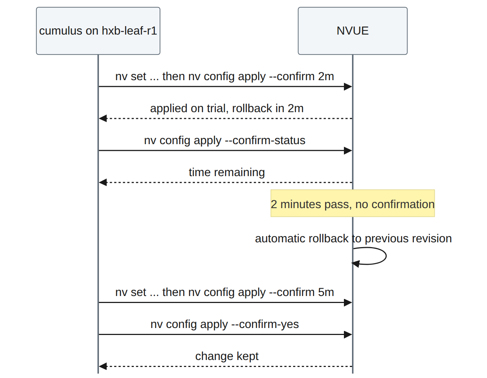

Lab 1 — NVUE Essentials on Cumulus VX¶
Companion to the NCP-AIN Certification Guide
This free lab is part of the hands-on companion to NCP-AIN Certification Guide by Vakeesan Thevarajah (Cloudfoxy Ltd). The book explains the theory, design choices and hardware behaviour behind every step.
Lab at a glance¶
| Book chapters | Chapter 4 (Cumulus Linux and NVUE Essentials); Chapter 21 (NVUE Templates and Configuration Management) for the revision model |
| Exam objectives | 2.1 Configure Spectrum-X switches (foundation: the switch OS and NVUE) · 6.1 Manage switch configuration with NVUE · supports 2.4 (NVIDIA Air) |
| Time | 75–90 minutes |
| Air resources used | Simulation helix-b-air: hxb-spine01, hxb-spine02, hxb-leaf-r1 … hxb-leaf-r4 (6 × Cumulus VX 5.16.1) and oob-mgmt-server. The GPU servers can stay powered but are not used. |
| Prerequisite labs | Lab 0 (simulation imported from helix-b-air.json, started, and oob-mgmt-server reachable) |
Objectives¶
By the end of this lab you will be able to:
- Log in to a Cumulus VX switch from the out-of-band jump host and change the default password.
- Use
nv show,nv setandnv unset, with Tab completion, to read and change the NVUE object model. - Explain and observe the pending, applied and startup configurations, and use
nv config diff,nv config applyandnv config save. - Find past changes with
nv config historyandnv config revision, and roll back withnv config apply <revision>. - Make a risky change safely with
nv config apply --confirmand let it roll back by itself. - Give every switch in Helix-B its hostname, port descriptions, jumbo MTU (9216) and loopback address, ready for the underlay in Lab 2.
- Read configuration through the NVUE REST API with
curlon port 8765.
Background¶
Cumulus Linux 5.x is configured through NVUE, an object model of the whole switch. Every nv command addresses a path in that model, for example interface swp31 link mtu or system hostname. The same paths are exposed by the NVUE REST API on TCP port 8765, which is why the CLI, the API, templates (Chapter 21) and Ansible (Chapter 22) all describe configuration in the same way.
NVUE never changes the running switch while you type. nv set and nv unset only build a pending revision. nv config apply turns pending into the applied configuration, and NVUE then renders the Linux files (/etc/network/interfaces, /etc/frr/frr.conf and others) and reloads the services. With auto-save enabled (the default in Cumulus Linux 5.x), each apply is also written to the startup configuration, /etc/nvue.d/startup.yaml, which is what the switch loads at boot. With auto-save disabled you need an explicit nv config save.
Every apply is stored as a numbered revision. You can compare revisions with nv config diff, see who applied what with nv config history, and return to an earlier revision with nv config apply <revision>. For changes that could cut you off, nv config apply --confirm <time> applies the change on trial and rolls it back automatically unless you confirm it in time.

Version note
This guide uses Cumulus VX 5.16.1. NVUE paths occasionally move between 5.x releases (for example, SVI addressing moved under an ipv4 object in 5.15; Lab 5 covers that). The commands in this lab were checked against the Cumulus Linux 5.16 documentation. If a command is rejected on your release, press Tab after the last accepted word to see what NVUE expects.
Step-by-step¶
The addressing and naming plan for this lab is below. Keep it open; every task refers to it.
| Switch | Loopback (lo) | Uplink ports | Downlink ports |
|---|---|---|---|
| hxb-spine01 | 10.255.0.1/32 | – | swp1–swp4 → leaf-r1…r4 swp31 |
| hxb-spine02 | 10.255.0.2/32 | – | swp1–swp4 → leaf-r1…r4 swp32 |
| hxb-leaf-r1 | 10.255.0.11/32 | swp31 → spine01 swp1, swp32 → spine02 swp1 | swp1 → hxb-gpu01 eth1, swp2 → hxb-gpu03 eth1 |
| hxb-leaf-r2 | 10.255.0.12/32 | swp31 → spine01 swp2, swp32 → spine02 swp2 | swp1 → hxb-gpu01 eth2, swp2 → hxb-gpu03 eth2 |
| hxb-leaf-r3 | 10.255.0.13/32 | swp31 → spine01 swp3, swp32 → spine02 swp3 | swp1 → hxb-gpu02 eth1, swp2 → hxb-gpu04 eth1 |
| hxb-leaf-r4 | 10.255.0.14/32 | swp31 → spine01 swp4, swp32 → spine02 swp4 | swp1 → hxb-gpu02 eth2, swp2 → hxb-gpu04 eth2 |

Task 1 — First login and password change¶
Do this on all switches
| Switch | Log in from oob-mgmt-server with | New password |
|---|---|---|
| hxb-spine01 | ssh cumulus@hxb-spine01 |
CumulusLinux! |
| hxb-spine02 | ssh cumulus@hxb-spine02 |
CumulusLinux! |
| hxb-leaf-r1 | ssh cumulus@hxb-leaf-r1 |
CumulusLinux! |
| hxb-leaf-r2 | ssh cumulus@hxb-leaf-r2 |
CumulusLinux! |
| hxb-leaf-r3 | ssh cumulus@hxb-leaf-r3 |
CumulusLinux! |
| hxb-leaf-r4 | ssh cumulus@hxb-leaf-r4 |
CumulusLinux! |
-
In the Air console, open the oob-mgmt-server terminal and log in as
ubuntu/nvidia(check the login banner or your Air node panel if these differ). If Air asks you to change this password too, do so and note it. -
From the jump host, connect to the first leaf:
-
Accept the host key (
yes), enter the default passwordcumulus, and then follow the forced password change: entercumulusagain as the current password, thenCumulusLinux!twice.Expected output (illustrative; wording varies by release):
-
The session closes after the change on many releases. Log in again with the new password:
-
Repeat steps 2–4 for the other five switches, using the table above. Use
exitto return to the jump host each time.Field note
:mgmt:in the prompt means your shell runs in the management VRF, because you arrived over eth0.pingandtraceroutestill use the default (data-plane) VRF unless you add-I mgmt. You will rely on that in Lab 2.Warning
Use the same new password on every switch. The REST API step in Task 8 and the automation labs later assume
cumulus/CumulusLinux!. If you choose something else, substitute it everywhere.
Checkpoint
- You can log in to all six switches from oob-mgmt-server with
CumulusLinux!. - The prompt on each switch ends in
:mgmt:~$.
Task 2 — Explore the object model with nv show¶
Work on hxb-leaf-r1 for Tasks 2–4.
-
Look at the system object and the interface summary:
Expected output (illustrative, trimmed):
operational applied ------------------- ------------------- ----------- hostname hxb-leaf-r1 cumulus build Cumulus Linux 5.16.1 uptime 0:24:10 timezone Etc/UTC Interface Admin Status Oper Status Speed MTU Type Remote Host Remote Port Summary --------- ------------ ----------- ----- ----- -------- ------------ ----------- ------------------------- eth0 up up 1G 1500 eth oob-mgmt-sw… swp2 IP Address: 192.168.200.x/24 lo up up 65536 loopback IP Address: 127.0.0.1/8 swp1 down down 9216 swp ... -
Note the two columns in
nv show system: operational is what the switch is actually doing; applied is what NVUE has been told. If they differ (for example, Air set the hostname at boot outside NVUE), NVUE does not yet own that setting. -
Use Tab completion to discover the tree. Press Tab twice after each partial command:
-
Try machine-readable output, which automation uses in Labs 11 and 12:
nv config showprints the whole applied configuration as YAML. On a fresh switch it is short. -
Ask NVUE where a setting lives with
nv config findornv config lookupif your release has them (Tab afternv configto check). This is useful when you remember a value but not its path.
Checkpoint
- You can explain the difference between the operational and applied columns.
nv show interfacelists eth0, lo and the swp ports.
Task 3 — Set the hostname through NVUE¶
-
Stage the hostname:
-
Look at what is pending before you apply it:
Expected output (illustrative):
-
Apply it. If NVUE asks
Are you sure? [y/N], answery. The output below is illustrative; your revision number will differ: -
Confirm that the applied and operational values now agree:
Field note
Air often sets the hostname from the node name, so your prompt may already have shown
hxb-leaf-r1. Setting it through NVUE still matters: it puts the hostname in the applied and startup configuration, so NVUE owns it. The shell prompt only changes when you next log in.
Checkpoint
nv show systemshowshxb-leaf-r1in both the operational and applied columns.nv config diffnow prints nothing (nothing is pending).
Task 4 — Pending vs applied vs startup¶
-
Stage a description on the first uplink but do not apply it:
-
Look at the same object in each revision:
cumulus@hxb-leaf-r1:mgmt:~$ nv show interface swp31 --pending cumulus@hxb-leaf-r1:mgmt:~$ nv show interface swp31 --applied cumulus@hxb-leaf-r1:mgmt:~$ nv show interface swp31 --startupExpected result: only
--pendingshows the description. Applied and startup do not have it yet. -
Check the auto-save setting:
Expected output (illustrative):
-
Now turn auto-save off, so you can see the three revisions separate. Apply both changes together:
-
Compare applied with startup:
Expected output (illustrative): the description (and the auto-save change itself) appear, because they are applied but not yet in
startup.yaml. -
Save applied to startup and compare again:
The second diff should now be empty.
-
Turn auto-save back on, because the rest of this guide assumes it:
-
Look at the startup file itself (read only; never edit it by hand):
Exam trap
nv config savedoes not apply anything. It copies the applied configuration to startup. Onlynv config applychanges the running switch. A change that is only pending is lost at reboot.
Checkpoint
- You saw a change exist in pending only, then in applied but not startup, then in all three.
nv show system config auto-saveshowsenabledagain.
Task 5 — Descriptions, MTU 9216 and loopbacks on every switch¶
Now give every switch its identity and port settings. Ports that NVUE configures are brought up; we also set link state up explicitly so the intent is clear in the configuration.
Do this on all switches
| Setting | Spines (hxb-spine01, hxb-spine02) | Leaves (hxb-leaf-r1 … r4) |
|---|---|---|
| Hostname | nv set system hostname <name> |
nv set system hostname <name> |
| Ports | swp1–swp4 | swp1, swp2, swp31, swp32 |
| Admin state | link state up |
link state up |
| MTU | link mtu 9216 |
link mtu 9216 |
| Description | to-hxb-leaf-rN-swp31/32 | server or spine port name |
| Loopback | 10.255.0.1/32, 10.255.0.2/32 | 10.255.0.11/32 … 10.255.0.14/32 |
| Finish with | nv config diff, then nv config apply -y |
nv config diff, then nv config apply -y |
The values differ per switch, so a full block is given for each. Paste each block into the matching switch.
hxb-spine01
cumulus@hxb-spine01:mgmt:~$ nv set system hostname hxb-spine01
cumulus@hxb-spine01:mgmt:~$ nv set interface swp1 description to-hxb-leaf-r1-swp31
cumulus@hxb-spine01:mgmt:~$ nv set interface swp2 description to-hxb-leaf-r2-swp31
cumulus@hxb-spine01:mgmt:~$ nv set interface swp3 description to-hxb-leaf-r3-swp31
cumulus@hxb-spine01:mgmt:~$ nv set interface swp4 description to-hxb-leaf-r4-swp31
cumulus@hxb-spine01:mgmt:~$ nv set interface swp1-4 link state up
cumulus@hxb-spine01:mgmt:~$ nv set interface swp1-4 link mtu 9216
cumulus@hxb-spine01:mgmt:~$ nv set interface lo ip address 10.255.0.1/32
cumulus@hxb-spine01:mgmt:~$ nv config diff
cumulus@hxb-spine01:mgmt:~$ nv config apply -y
hxb-spine02
cumulus@hxb-spine02:mgmt:~$ nv set system hostname hxb-spine02
cumulus@hxb-spine02:mgmt:~$ nv set interface swp1 description to-hxb-leaf-r1-swp32
cumulus@hxb-spine02:mgmt:~$ nv set interface swp2 description to-hxb-leaf-r2-swp32
cumulus@hxb-spine02:mgmt:~$ nv set interface swp3 description to-hxb-leaf-r3-swp32
cumulus@hxb-spine02:mgmt:~$ nv set interface swp4 description to-hxb-leaf-r4-swp32
cumulus@hxb-spine02:mgmt:~$ nv set interface swp1-4 link state up
cumulus@hxb-spine02:mgmt:~$ nv set interface swp1-4 link mtu 9216
cumulus@hxb-spine02:mgmt:~$ nv set interface lo ip address 10.255.0.2/32
cumulus@hxb-spine02:mgmt:~$ nv config diff
cumulus@hxb-spine02:mgmt:~$ nv config apply -y
hxb-leaf-r1 (the hostname and swp31 description are already applied from Tasks 3–4; setting them again is harmless)
cumulus@hxb-leaf-r1:mgmt:~$ nv set system hostname hxb-leaf-r1
cumulus@hxb-leaf-r1:mgmt:~$ nv set interface swp31 description to-hxb-spine01-swp1
cumulus@hxb-leaf-r1:mgmt:~$ nv set interface swp32 description to-hxb-spine02-swp1
cumulus@hxb-leaf-r1:mgmt:~$ nv set interface swp1 description hxb-gpu01-eth1
cumulus@hxb-leaf-r1:mgmt:~$ nv set interface swp2 description hxb-gpu03-eth1
cumulus@hxb-leaf-r1:mgmt:~$ nv set interface swp1-2,swp31-32 link state up
cumulus@hxb-leaf-r1:mgmt:~$ nv set interface swp1-2,swp31-32 link mtu 9216
cumulus@hxb-leaf-r1:mgmt:~$ nv set interface lo ip address 10.255.0.11/32
cumulus@hxb-leaf-r1:mgmt:~$ nv config diff
cumulus@hxb-leaf-r1:mgmt:~$ nv config apply -y
hxb-leaf-r2
cumulus@hxb-leaf-r2:mgmt:~$ nv set system hostname hxb-leaf-r2
cumulus@hxb-leaf-r2:mgmt:~$ nv set interface swp31 description to-hxb-spine01-swp2
cumulus@hxb-leaf-r2:mgmt:~$ nv set interface swp32 description to-hxb-spine02-swp2
cumulus@hxb-leaf-r2:mgmt:~$ nv set interface swp1 description hxb-gpu01-eth2
cumulus@hxb-leaf-r2:mgmt:~$ nv set interface swp2 description hxb-gpu03-eth2
cumulus@hxb-leaf-r2:mgmt:~$ nv set interface swp1-2,swp31-32 link state up
cumulus@hxb-leaf-r2:mgmt:~$ nv set interface swp1-2,swp31-32 link mtu 9216
cumulus@hxb-leaf-r2:mgmt:~$ nv set interface lo ip address 10.255.0.12/32
cumulus@hxb-leaf-r2:mgmt:~$ nv config diff
cumulus@hxb-leaf-r2:mgmt:~$ nv config apply -y
hxb-leaf-r3
cumulus@hxb-leaf-r3:mgmt:~$ nv set system hostname hxb-leaf-r3
cumulus@hxb-leaf-r3:mgmt:~$ nv set interface swp31 description to-hxb-spine01-swp3
cumulus@hxb-leaf-r3:mgmt:~$ nv set interface swp32 description to-hxb-spine02-swp3
cumulus@hxb-leaf-r3:mgmt:~$ nv set interface swp1 description hxb-gpu02-eth1
cumulus@hxb-leaf-r3:mgmt:~$ nv set interface swp2 description hxb-gpu04-eth1
cumulus@hxb-leaf-r3:mgmt:~$ nv set interface swp1-2,swp31-32 link state up
cumulus@hxb-leaf-r3:mgmt:~$ nv set interface swp1-2,swp31-32 link mtu 9216
cumulus@hxb-leaf-r3:mgmt:~$ nv set interface lo ip address 10.255.0.13/32
cumulus@hxb-leaf-r3:mgmt:~$ nv config diff
cumulus@hxb-leaf-r3:mgmt:~$ nv config apply -y
hxb-leaf-r4
cumulus@hxb-leaf-r4:mgmt:~$ nv set system hostname hxb-leaf-r4
cumulus@hxb-leaf-r4:mgmt:~$ nv set interface swp31 description to-hxb-spine01-swp4
cumulus@hxb-leaf-r4:mgmt:~$ nv set interface swp32 description to-hxb-spine02-swp4
cumulus@hxb-leaf-r4:mgmt:~$ nv set interface swp1 description hxb-gpu02-eth2
cumulus@hxb-leaf-r4:mgmt:~$ nv set interface swp2 description hxb-gpu04-eth2
cumulus@hxb-leaf-r4:mgmt:~$ nv set interface swp1-2,swp31-32 link state up
cumulus@hxb-leaf-r4:mgmt:~$ nv set interface swp1-2,swp31-32 link mtu 9216
cumulus@hxb-leaf-r4:mgmt:~$ nv set interface lo ip address 10.255.0.14/32
cumulus@hxb-leaf-r4:mgmt:~$ nv config diff
cumulus@hxb-leaf-r4:mgmt:~$ nv config apply -y
Version note
On Cumulus Linux 5.16 the loopback address is nv set interface lo ip address <prefix>, as in Chapter 4. If your release rejects ip address for lo, press Tab after nv set interface lo and use the address path it offers (newer releases have reorganised some addressing under ipv4). The command ranges swp1-4 and swp1-2,swp31-32 are standard NVUE syntax.
-
After applying on each switch, check the ports and the loopback:
cumulus@hxb-leaf-r1:mgmt:~$ nv show interface cumulus@hxb-leaf-r1:mgmt:~$ nv show interface swp31 link cumulus@hxb-leaf-r1:mgmt:~$ nv show interface lo ip addressExpected output (illustrative, trimmed):
Interface Admin Status Oper Status Speed MTU Type Remote Host Remote Port Summary --------- ------------ ----------- ----- ----- -------- ----------- ----------- --------------------------- lo up up 65536 loopback IP Address: 10.255.0.11/32 swp1 up up 1G 9216 swp hxb-gpu01 eth1 swp2 up up 1G 9216 swp hxb-gpu03 eth1 swp31 up up 1G 9216 swp hxb-spine01 swp1 swp32 up up 1G 9216 swp hxb-spine02 swp1 -
The Remote Host and Remote Port columns come from LLDP, which is on by default. Use them to prove the cabling matches the plan table. A mismatch here is the cheapest cabling bug you will ever find.
Warning
Cumulus VX ports are virtual links and report a nominal speed (often 1G). Real Spectrum ports would show 400G or 800G. MTU 9216 is still applied and visible in
nv show; that is what matters here.
Checkpoint
- All six switches show their correct hostname (log out and back in to see it in the prompt).
- On every switch, the configured ports are admin up, oper up, MTU 9216, with the right description.
- LLDP neighbours match the cabling table on every leaf and spine.
nv show interface loshows the right 10.255.0.x/32 on each switch.
Task 6 — History, revisions and rollback¶
Return to hxb-leaf-r1.
-
List the stored revisions and the apply history:
Expected output (illustrative; your revision numbers and dates will differ):
Rev ID State Apply ID Apply Date Type User Reason 2 applied_and_saved rev_2_apply_1 2026-09-28 10:02:11 CLI cumulus Config update 3 applied rev_3_apply_1 2026-09-28 10:06:40 CLI cumulus Config update 4 applied_and_saved rev_4_apply_1 2026-09-28 10:07:15 CLI cumulus Config update 5 applied_and_saved rev_5_apply_1 2026-09-28 10:15:02 CLI cumulus Config update -
Write down the revision ID of your current good state (the latest one, here 5). Call it GOOD.
-
Make a deliberate "bad" change: wrong description and wrong MTU on swp32.
-
Compare the bad revision with GOOD. Replace
5and6with your numbers:Expected output (illustrative):
-
Roll back by applying the GOOD revision:
-
Confirm the rollback and look at how history records it:
Field note
Rollback with
nv config apply <rev>applies the whole configuration of that revision, not just the reverse of the last change. Anything applied after that revision is also undone. Always runnv config diff <good> appliedfirst so you know exactly what will change.
Checkpoint
- swp32 shows the description
to-hxb-spine02-swp1and MTU 9216 again. nv config historyshows the bad apply and the rollback as separate entries.
Task 7 — Trial apply with --confirm¶
A trial apply protects you from changes that could lock you out. You will let one trial expire, and confirm a second.

-
Stage a harmless test change and apply it on a two-minute trial:
-
Check the change is live and how long is left:
-
Do nothing for just over two minutes, then check again:
Expected result: the description is back to
hxb-gpu03-eth1, and the history shows the rollback. -
Run a second trial and confirm it this time. For the test we set a useful value: a longer description that includes the tenant:
-
Verify the change stayed and is in startup:
cumulus@hxb-leaf-r1:mgmt:~$ nv show interface swp2 description cumulus@hxb-leaf-r1:mgmt:~$ nv config diff applied startupVersion note
The NVUE command reference documents
nv config apply --confirm [<time>],--confirm-status, andnv config apply [<revision>] --confirm-yesto keep a trial change. The default window is ten minutes, and the timer acceptss,morh. On some releases the confirmation is also offered as an interactive prompt; if--confirm-yesis rejected on yours, press Tab afternv config apply --to see the confirm options (check on your release).Field note
In production, use
--confirmfor anything that touches eth0, the management VRF, ACLs, BGP or the NVUE API itself. If the change cuts you off, the switch rolls back without you.
Checkpoint
- The first trial rolled back by itself.
- The second trial's description
hxb-gpu03-eth1-BOREALISis applied and, with auto-save on, also in startup.
Task 8 — Read configuration through the NVUE REST API¶
The REST API is enabled by default on TCP port 8765 and, on current releases, listens on localhost unless you add a listening address. You will call it from the switch itself.
-
Check the API service:
Expected output (illustrative):
-
Read the applied loopback configuration.
-kaccepts the self-signed certificate. The single quotes stop Bash from interpreting the!in the password:cumulus@hxb-leaf-r1:mgmt:~$ curl -s -k -u 'cumulus:CumulusLinux!' \ 'https://127.0.0.1:8765/nvue_v1/interface/lo?rev=applied' | python3 -m json.toolExpected output (illustrative, trimmed):
-
Read operational state for an uplink, the API equivalent of
nv show interface swp31 link: -
Read the revision list, which is what automation uses to track changes:
-
Compare the JSON paths with the CLI paths.
interface/lo?rev=appliedisnv show interface lo --applied. That one-to-one mapping is the point of the NVUE object model.Warning
-kand a password on the command line are fine in a lab. In production use a dedicated automation account, keep credentials in a vault, and validate the switch certificate. To reach the API from oob-mgmt-server you would add a listening address (nv set system api listening-address <ip>) in the management VRF; later labs use SSH and Ansible instead, so leave it on localhost.
Checkpoint
curlreturns JSON showing10.255.0.11/32onlo.- You can name the CLI command equivalent to each API URL you used.
Verify¶
Tick each item before you move on to Lab 2.
- You can log in to all six switches as
cumuluswithCumulusLinux!. -
nv show systemshows the correct hostname in both columns on every switch. - On every leaf, swp1, swp2, swp31 and swp32 are up, MTU 9216, with correct descriptions; on every spine, swp1–swp4 are the same.
- LLDP (
nv show interface) matches the cabling plan. - Loopbacks: spine01 10.255.0.1/32, spine02 10.255.0.2/32, leaf-r1 … r4 10.255.0.11–.14/32.
-
nv config diffis empty andnv config diff applied startupis empty on every switch. -
nv show system config auto-saveisenabledon hxb-leaf-r1. - You rolled back with
nv config apply <rev>and watched a--confirmtrial expire. -
curltohttps://127.0.0.1:8765/nvue_v1/...returns JSON.
Break and fix¶
Fault 1 — "My change was there, now it has gone"¶
Inject (on hxb-leaf-r2):
cumulus@hxb-leaf-r2:mgmt:~$ nv set system config auto-save state disabled
cumulus@hxb-leaf-r2:mgmt:~$ nv config apply -y
cumulus@hxb-leaf-r2:mgmt:~$ nv set interface swp2 description hxb-gpu03-eth2-BOREALIS
cumulus@hxb-leaf-r2:mgmt:~$ nv config apply -y
Symptom: a colleague reports that the new swp2 description "disappears after every reboot". (Optionally reboot the switch to see it: sudo reboot, wait for it to return, and log in again.)
Diagnosis:
-
Compare applied with startup:
The description appears in the diff: it is applied but was never written to startup. (After a reboot, it is missing from applied too, because the switch loaded startup.)
-
Check why:
Auto-save is disabled.
Fix: re-enable auto-save and make sure the change is applied and saved.
cumulus@hxb-leaf-r2:mgmt:~$ nv set system config auto-save state enabled
cumulus@hxb-leaf-r2:mgmt:~$ nv set interface swp2 description hxb-gpu03-eth2-BOREALIS
cumulus@hxb-leaf-r2:mgmt:~$ nv config apply -y
cumulus@hxb-leaf-r2:mgmt:~$ nv config save
cumulus@hxb-leaf-r2:mgmt:~$ nv config diff applied startup
The last diff must be empty.
Fault 2 — A hand edit that NVUE overwrites¶
Inject (on hxb-leaf-r3): edit a file NVUE manages directly.
cumulus@hxb-leaf-r3:mgmt:~$ sudo sed -i 's/mtu 9216/mtu 1500/' /etc/network/interfaces
cumulus@hxb-leaf-r3:mgmt:~$ sudo ifreload -a
cumulus@hxb-leaf-r3:mgmt:~$ ip link show swp31 | grep mtu
The kernel now shows MTU 1500 on the ports.
Symptom: nv show interface shows MTU 1500 in the operational view, but nv show interface swp31 link --applied still says 9216. Later, after an unrelated nv config apply, the MTU silently returns to 9216.
Diagnosis:
-
Compare the views:
Operational and applied disagree: someone changed the switch outside NVUE.
-
nv config historyshows no apply that set MTU 1500. The change was never an NVUE change.Fix: let NVUE put back its own configuration, and agree the team rule: NVUE only.
If a plain apply reports nothing to apply and the MTU stays at 1500, force NVUE to re-render the files by applying the current revision again with nv config apply <current-rev> -y, or reboot the switch (startup still has MTU 9216). Check on your release which of these re-renders the files.
Warning
This is exactly the Chapter 4 scenario. Hand edits to /etc/network/interfaces or /etc/frr/frr.conf on an NVUE-managed switch are overwritten by the next apply. Choose NVUE for a switch and never mix the two.
Clean-up / save state¶
-
On every switch, confirm nothing is pending and startup matches applied:
-
If either shows output, run
nv config apply -yandnv config save. - Check that auto-save is enabled on hxb-leaf-r2 again (Fault 1).
- Keep the configuration. Lab 2 builds directly on these loopbacks, descriptions and MTUs.
- If you are stopping here, put the simulation to sleep from the Air console to save compute-hour credits. Sleeping keeps the switch disks, so your configuration survives.
Exam tie-in¶
- 6.1 — The order of operations is set → diff → apply (→ save). Know the three revisions and how to show each (
--pending,--applied,--startup), and thatnv config savewrites applied to/etc/nvue.d/startup.yaml. - 6.1 — Safe change:
nv config apply --confirm <time>rolls back automatically;nv config history/nv config revisionplusnv config apply <rev>is the manual rollback. - 2.1 — All Spectrum-X switch configuration in later objectives (RoCE with
nv set qos roce, adaptive routing, EVPN) uses this same NVUE workflow, and RoCE can only be configured with NVUE. - 2.1 / 6.1 — The REST API runs on port 8765 with base path
/nvue_v1/, and its URL paths mirror thenvCLI paths. - 2.4 — NVIDIA Air lets you rehearse all of this on Cumulus VX, with the caveat that VX has no Spectrum ASIC.
Review questions¶
- You run
nv set interface swp1 link mtu 9216and thennv config save, and reboot. What MTU does swp1 have after the reboot, and why? - Which command shows only the changes you have staged but not yet applied?
- A change applied with
nv config apply --confirm 5mis not confirmed. What happens, and how could you have kept it? - You find a bad change was applied as revision 12, and revision 11 was good. Which command returns the switch to the good state, and what should you check first?
- What is the REST API equivalent of
nv show interface lo --appliedon a switch, and which port does it use by default?
Answers¶
- The old MTU.
nv config savecopies the applied configuration to startup; the MTU change was only pending and was never applied, so it was neither running nor saved. nv config diff(with no arguments it compares pending with applied).nv show <path> --pendingshows the pending view of one object.- After five minutes NVUE rolls back to the previous configuration automatically. To keep it, confirm within the window with
nv config apply --confirm-yes. nv config apply 11(add-yto skip the prompt). First runnv config diff 11 appliedto see everything the rollback will change, because it restores the whole revision.GET https://<switch>:8765/nvue_v1/interface/lo?rev=applied, on port 8765, using HTTP basic authentication.
Go deeper
The matching book chapters cover the exam objectives for this lab in full, with a Q&A pack of about 40 exam-style questions per chapter.